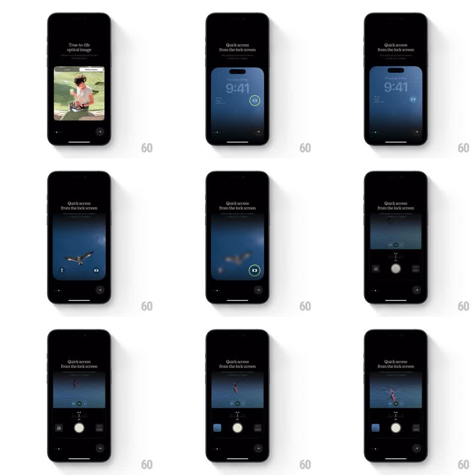

Media
Frame-by-frame

Rebuild this animation 1:1: Lampa's lock-screen feature intro - a mock lock screen wakes inside the frame, taps the camera shortcut, and dissolves into the live camera UI as a capture demo plays.

Rebuild this animation 1:1: Lampa's lock-screen feature intro - a mock lock screen wakes inside the frame, taps the camera shortcut, and dissolves into the live camera UI as a capture demo plays. ## Integration Integration: stack-agnostic spec - springs given as stiffness/damping, timed motions as duration + curve; map every value to your framework and animation library of choice. ## Scene Black onboarding screen with "Quick access from the lock screen" headline. Inside a rounded frame: a mock lock screen (9:41, blue gradient wallpaper, circled camera shortcut), which dissolves to a viewfinder (a bird over water), then the full camera UI with shutter, mode dial, and a captured-photo thumbnail. ## Motion spec Pattern: staged device demo, ~3s. - The lock screen frame rises and fades in (400ms, 20px, ease-out); the camera shortcut gets a pulsing highlight ring (1s loop, twice). - A simulated tap: the ring contracts (150ms) and the lock screen zooms softly into the viewfinder (400ms, scale 1 to 1.05 with crossfade), as if entering the camera. - The viewfinder's subject drifts (2s slow pan) before the camera chrome - shutter, mode labels, zoom readout - slides up around it (300ms, ease-out). - A capture fires: the screen flashes white (100ms), the frame freezes into a photo that shrinks into the bottom-left thumbnail (300ms, ease-in). - The sequence holds on the live camera, thumbnail present. ## Calibration - The zoom-into-camera transition is the connective tissue - a hard cut would lose the "from the lock screen" story. - The highlight ring pulses exactly twice before the tap; an endless pulse reads as loading. ## Reduced motion Stages crossfade without zoom. ## Don't miss - The mock lock screen keeps real lock-screen anatomy (clock, wallpaper gradient, shortcut buttons) - it must read as the OS, not a drawing. - The captured thumbnail keeps the exact frame that was in the viewfinder at the flash.